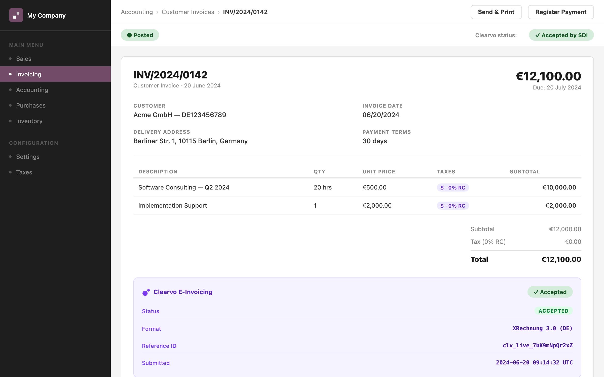
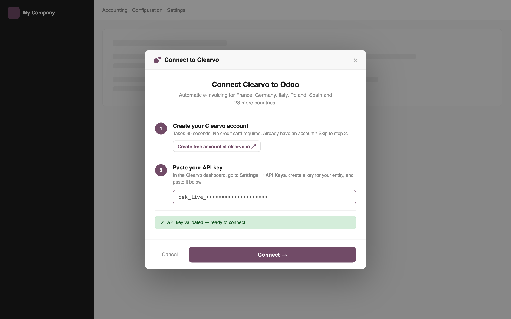
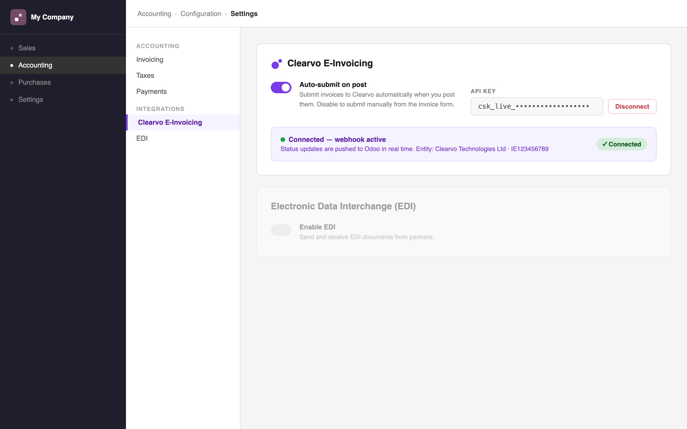

Clearvo E-Invoicing
Post an invoice in Odoo. It reaches the tax authority automatically — in France, Germany, Italy, Poland, Spain, and 27 more countries.
Live in under 2 minutes. One API key. No XML configuration, no format mapping, no per-country rules to maintain. Clearvo handles the format (UBL, FatturaPA, XRechnung, KSeF…), the submission, and the clearance status — all inside Odoo.
How to get started
- Create a Clearvo account — Sign up free at clearvo.io. No credit card, no sales call. Takes 60 seconds.
- Generate an API key — In the Clearvo dashboard, go to Settings → API Keys and create an entity key for your legal entity.
- Paste the key into Odoo — Go to Accounting → Configuration → Clearvo E-Invoicing, paste the key, and click Connect. Clearvo validates it instantly and registers the webhook. You're live.
What it does
- Auto-submit on post: when you confirm an invoice, Clearvo receives it, generates the correct XML format (UBL, FatturaPA, XRechnung, etc.), and submits it to the relevant tax authority.
- Live clearance status: every invoice shows its status — Pending, Accepted, Rejected — directly on the invoice form in Odoo.
- Push notifications: Clearvo sends a webhook when a status changes, so Odoo updates in real time without polling.
- Manual retry: if a submission fails, a Retry button appears with the full error detail from the authority.
- Multi-company: each Odoo company has its own API key, currency, and auto-submit toggle.
- Sandbox mode: use a
csk_test_ key to test the full flow — no invoices reach any tax authority.
Supported countries
France (Factur-X / DGFiP)
Germany (XRechnung / KoSIT)
Belgium (Peppol BIS 3.0)
Italy (FatturaPA / SDI)
Poland (KSeF FA3)
Spain (VeriFactu / AEAT)
Portugal (SAFT-PT / AT)
Romania (e-Factura / ANAF)
Hungary (NAV)
Greece (myDATA / AADE)
Netherlands (Peppol)
Austria (Peppol)
Norway (Peppol)
Denmark (Peppol)
Argentina (AFIP)
+ 17 more
Screenshots

Clearvo status panel on a posted invoice — clearance status and reference ID visible directly in Odoo.

The guided connect wizard — paste your API key, Clearvo validates and connects instantly.

Settings panel showing connected status, API key management, and auto-submit toggle.
Full integration guide
Tax code auto-detection, EN16931 code reference, manual override instructions, webhook setup, and troubleshooting:
clearvo.io/docs/odoo
Requirements
- Odoo 17.0
- The
account module (Accounting)
- A Clearvo account — free trial at clearvo.io
- Internet access from the Odoo server (outbound HTTPS to
api.clearvo.io)
Private / on-premises instances: if your Odoo server is not reachable from the public internet,
real-time webhook push won't work. Enable the Clearvo: poll pending invoices scheduled action
(under Technical → Scheduled Actions) to poll for status updates instead.
Support
Documentation: clearvo.io/docs
Help centre: help.clearvo.io
Email: support@clearvo.io